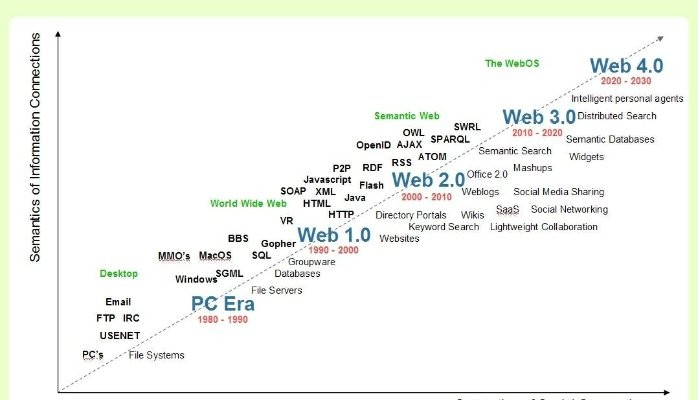

Title: The Evolution of Web Development: Trends and Technologies Shaping the Future
As a web developer, it's fascinating to witness the rapid evolution of our field. From the early days of static HTML pages to the dynamic,
interactive web applications of today, the journey of web development has been marked by constant innovation.
In this blog post, I'll explore some of the latest trends and technologies shaping the future of web development,
offering insights into how we can stay ahead in this ever-changing landscape.